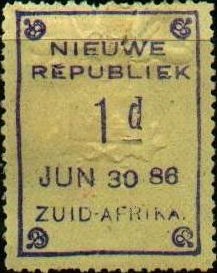
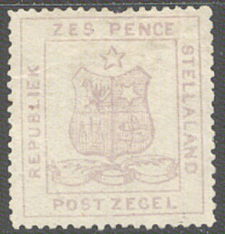
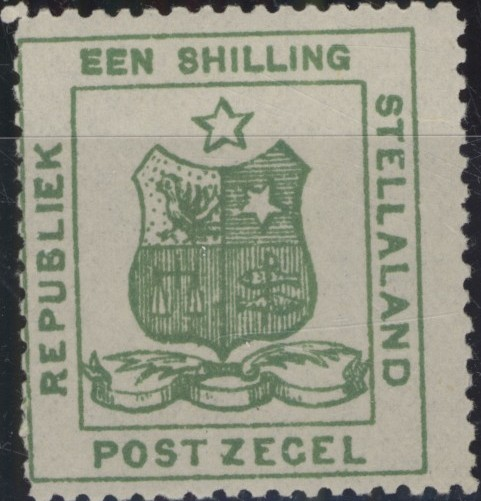
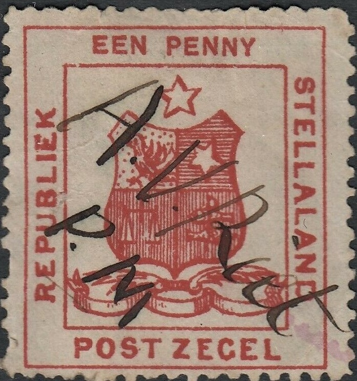
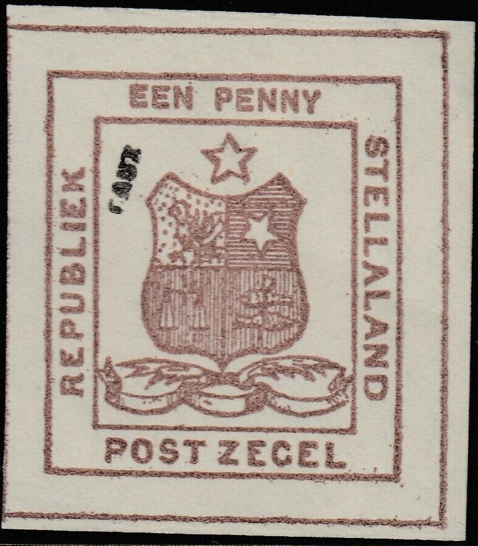

|
|||||
|
|||||
| Preview of Stamps Catalogue CD : VOLUME 1 |
|
|||||
|
|||||
| Preview of Stamps Catalogue CD : VOLUME 1 |
Return To Catalogue - South Africa
Note: on my website many of the
pictures can not be seen! They are of course present in the cd's;
contact me if you want to purchase the catalogue.


With date or without date 1 p lilac 2 p lilac 3 p lilac 4 p lilac 6 p lilac 9 p lilac 1 Sh lilac 1/6 Sh lilac 2 Sh lilac 2/6 Sh lilac 3 Sh lilac 4 Sh lilac 5 Sh lilac 5/6 Sh lilac 7/6 Sh lilac 10 Sh lilac 10/6 Sh lilac 12 Sh lilac 13 Sh lilac 1 Pound lilac 30 Sh lilac
The New Republic was incorporated in Transvaal in 1888.
For the specialist: These stamps were issued on yellow paper or on grey paper with cloth threads (similar to some of the stamps of Austria). Some stamps are embossed with a large seal of the republic. The stamps exist without any dates or with dates. The dates that can be found are: 9 Jan 86, 13 Jan 86, 20 Jan 86, 24 Jan 86, 10 Febr 86, 7 March 86, 17 March 86, 14 April 86, 14 Mai 86, 21 Mai 86, 24 Mai 86, 26 Mai 86, 30 Jun 86, 7 July 86, 19 Aug 86, 30 Aug 86, 6 Sept 86, 13 Sept 86, 6 Oct 86, 13 Oct 86, 3 Nov 86, 24 Nov 86, - Dec 86, 2 Dec 86, 4 Jan 87, 17 Jan 87, 20 Jan 87.
Value of the stamps |
|||
vc = very common c = common * = not so common ** = uncommon |
*** = very uncommon R = rare RR = very rare RRR = extremely rare |
||
| Value | Unused | Used | Remarks |
Cheapest types |
|||
| 1 p | *** | *** | |
| 2 p | *** | *** | |
| 3 p | *** | *** | |
| 4 p | *** | *** | |
| 6 p | R | R | |
| 1 Sh | *** | *** | |
| 1 Sh 6 p | R | R | |
| 2 Sh | RR | RR | |
| 2 Sh 6 p | RR | RR | |
| Higher values | RR | RRR | Most of the higher values were only used for fiscal purposes |
Postal stationary in the same design (2 p violet, 4 Jan 87) was issued in 1887.
Many forgeries exist (by the way, I'm not sure if all the above stamps are genuine), genuine stamps are always perforated 11 1/2; Genuine stamps have the upper part of the first "E" in "REPUBLIEK" with an 'accent':

('accent' above the "E")
However, be careful, there is a forgery which has this 'accent'. The paper is incorrect on all the forgeries. No one has been able to recreate this older type of "granite" paper that was used for printing tests (information thanks to Ron Carlson).
Fournier forgeries as they can be found in 'The Fournier Album of
Philatelic Forgeries' (reduced sizes)
The forger Fournier advertises his
'stamps' in his 1914 pricelist: he lists as first choice
forgeries:
1) the 1 and 4 d (5 values for 2.50 Swiss Francs);
2) 1 d embossed (3 values for 1.50 Swiss Francs) and
3) 1 and 2 d embossed (4 values for 2 Swiss Francs).
Furthermore he offers as second choice forgeries the 1 p (2
values) for 0.50 Swiss Francs. In 'The Fournier album of
philatelic forgeries' pictures of his forgeries can be seen.
The above stamp is a forgery, nicely done on granite paper, but the type faces are slightly wrong (information obtained thanks to Ron Carlson USA).
Bogus issues for New Republic, inscription "NEUE REPUBLIK IN SUDAFRIKA" (in German! the value is in English pence)?
Reduced sizes
The republic of Stellaland existed from 1882 to 1885, and was then divided between Transvaal and British Bechuanaland. Stellaland did not cancel its stamps with the usual cancelling devices, instead only penstroked were used (mostly the initials of the postmaster "FH" and date). Cancelled stamps could have occasionally occured when the letters arrived in neighbouring countries (or are usually simply forgeries).


1 p red 3 p orange (yellow) 4 p green 6 p violet 1 Sh green Surcharged
"Twee" (red, in fancy letters) on 4 p green
For the specialist: these stamps have no watermark and are perforated 12. The surcharged stamp was was not issued, the stock was sold to a dealer (The forged stamps of all countries by J.Dorn).
Value of the stamps |
|||
vc = very common c = common * = not so common ** = uncommon |
*** = very uncommon R = rare RR = very rare RRR = extremely rare |
||
| Value | Unused | Used | Remarks |
| 1 p | *** | ? | |
| 3 p | R | ? | |
| 4 p | R | ? | |
| 6 p | R | ? | |
| 1 Sh | RR | ? | |
| 2 on 4 p | RRR | - | |
Most common 'cancel' a pencancel with the initials of the
postmaster "FH" and date. "FH" refers to
Ferdinand Hartzenberg. Other (much rarer) pencancels with
"FCD" (Frans Coenraad Dekker) or "CGD" (C.G.
Dennison). Source:
https://stadsbeplanner.wordpress.com/2012/10/29/3-penny/ ; see
also http://www.bechuanalandphilately.com/Collect_Stellaland.htm
Here half the signature "H" only, probably the other
half was on the stamp to the left of it?
Here a "JH" manuscript cancel with an additional
circular cancel, this looks like a forged signature to me.....
A stamp pencancelled in 1895??

Stamp with "A.V. Riet P.M" manual cancel.
Some information was given to me by Kas Erné
(The Netherlands), which I summarize as follows:
After the British victory in Stellaland, the British forces
confiscated all Stellaland stamps and subsequently send them to
London, where they ended up in the stamp trade. The stamps were
printed by Van de Sandt de Villiers & Co in Capetown, after a
first request to print the stamps to Hartley & Son
(Kimberley) failed (Hartley received a image of the desired
stamps, but he never replied). The stamps were used from 1 April
1884 to 2 December 1885. The surrounding countries (Transvaal,
Orange Freestate and Cape of Good Hope) did not recognize the
stamps and additional postage had to be paid for letters in
transit. Cancelling devices did not exists and the postmaster
applied his signature and a date on the stamps. The letters were
then transferred to Christiana (Transvaal). Such genuine letters
are very rare.
Forgeries were already reported in the philatelic press as early
as 1887. One (unlikely) theory is that a fired employee of the
printer (de Villiers) took a printing stone home and made
forgeries of those. Another theory states that the printer
himself (de Villiers) continued making reprints since Stellaland
had not paid the bill (this does not explain the difference in
design between the forgeries and the genuine stamps). It could
also be possible that the printer Hartley made forgeries in order
to compensate for the expenses that he had made (with a possibly
slightly different design that he had received, possibly the most
common forgery shown below could originate from this source).
The 'Twee' overprint is most likely an unauthorized issue created
by the postmaster of Vrijburg.
Genuine stamp with "VRIJBURG" cancel. I'm not certain
that the cancel is genuine.
Very dubious "CORREIO" cancel of 1 May 1884.
Many forgeries exist (since the stamps have no watermark and a relatively easy design), examples:
(Forgeries)
The left leaf in the bottom should not touch the ribbon in the genuine stamps. There should be two shading lines entering the star in the shield from the left hand side (this is absent in the forgeries). The perforation is also different from the genuine stamps.
I have even seen forgeries of the 1 p stamp in the wrong colour: green instead of red. Forged cancels on genuine stamps exist. Also genuine stamps with the perforation cut off (to imitate imperforate proofs) exist.
With 'FAUX' overprint, possibly a Fournier
forgery

Another stamp with "FAUX" overprint.
Dangerous forgery with "EEN PENNY" shorter than in the
genuine stamps.
Another forgery type. The star on top is not well done and the
leafs at the bottom are different. Next to it a "Twee"
on 4 p forgery.
A forgery with a Hungarian "FOLDVAR" cancel of 1901.
Hialeah forgeries (computer generated modern forgeries) should also exist.
The values 6 p orange, 1 Sh brown, 1 Sh 6 p brown, 2 Sh grey, 2 Sh 6 p grey, 5 Sh green, 10 Sh red, 1 Pound lilac and 5 Pounds red exist.
All these stamps eixst with a fancy overprint "JPM" in violet (issued in 1886, also inverted overprints exist).
fancy overprint "JPM"
I've seen several of these stamps with manuscript 'Cancelled'
(also imperforate stamps); are these proofs?
The Forbin guide says these fiscal stamps were further used in British Bechuanaland by manually putting a line over "REPUBLIEK VAN" and "STELLALAND". I've never seen such stamps.
A stamp with a Mafeking British Bechuanaland cancel.
Stamps - Timbres-Poste - Briefmarken - Postzegels

{kind=link}
{kind=link}
{kind=link}
{kind=link}
{kind=link}
{kind=link}